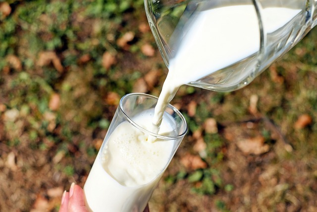

Carne
La carne ha un ruolo importante per l’apporto di ferro biodisponibile (Fe) e vitamina B12, poiché hanno un ruolo cruciale nella formazione di emoglobina e globuli rossi impedendo con la loro assunzione malattie quali l’anemia.

Pesce
.Il pesce oltre ad avere proteine ad alto valore nutrizionale è anche un’importante fonte di acidi grassi insaturi, in particolare della serie omega 3..

Uova
Le uova presentano proteine ad altissimo valore biologico, grassi emulsionati prevalentemente insaturi, minerali e vitamine.
Gustosi Mix
La Paella con carne e pesce è un piatto tipico Spagnolo,ormai conosciuto in tutto il mondo,si cucina in tanti modi e con diversi ingredienti.
Cereali
Con il termine cereale si intende ogni pianta erbacea, appartenente alla famiglia delle Graminacee, che produce semi amidacei, farinosi, commestibili.

Pasta
La pasta è un alimento a base di farina di diversa estrazione, tipico delle varie cucine regionali d'Italia, divisa in piccole forme regolari destinate alla cottura in acqua bollente e sale o con calore umido e salato.

Latte
Il latte è un alimento importante nella nostra alimentazione fin dai primi mesi di vita, rappresentando l’alimento per eccellenza in grado di coprire i fabbisogni energetici necessari all’accrescimento, in quanto ricco di proteine ad alto valore biologico, grassi, zuccheri facilmente digeribili, vitamine e di sali minerali.

Derivati del Latte
Tra i derivati del latte troviamo i formaggi, ottenuti dal latte intero o parzialmente scremato o scremato che mantengono in ogni modo lo stesso valore nutritivo.

Frutta
Nella frutta ritroviamo zuccheri semplici, fibra, sali minerali e vitamine. Vi sono sostanze volatili che conferiscono alla frutta sapore e profumo. Uno dei consigli che vale per tutti i gruppi alimentari è quello di preferire i prodotti di stagione, in modo da beneficiare al massimo del sapore e del valore nutritivo.

Ortaggi
Per ortaggio si intende il prodotto dell'orto. Se utilizzati per l'alimentazione, gli ortaggi possono apportare buone quantità di vitamine, sali minerali, oli essenziali ed enzimi importanti per l'organismo.

Olio
Fra gli oli da condimento è opportuno scegliere l’olio di oliva che oltre ad avere una funzione di trasporto di vitamine liposolubili e rende più gradevoli ed appetibili i cibi, è importante sceglierlo tra gli altri oli perché presenta nella cottura un alto punto di fumo che impedisce la formazione di prodotti tossici, dannosi per la salute.
Burro
Il burro è la parte grassa del latte, e viene separato dal latticello tramite un processo di inversione di fase.